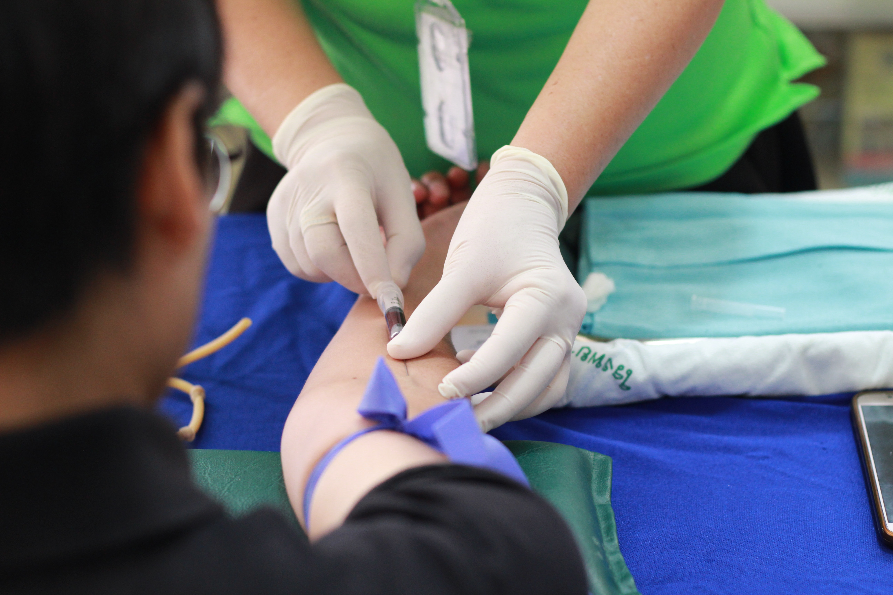

Blood drives
Host a blood drive
''SANBS means to gather a normal of 3000 units of blood each day broadly. It is through arranged, supportable blood drives at organizations, associations and foundations that we can accomplish this assortment target''.
What are the advantages of facilitating a blood drive?
Blood drives offers contributors the chance to become associated with having an effect to others in a helpful manner.
SANBS offers schooling for your staff on safe ways of life and prerequisites to meet all requirements to be a blood benefactor. An additional advantage for your association is that the Donor Educator covers significant data like physically communicated illnesses.
Blood drives are utilized by numerous organizations as a Corporate Social Investment action to show that they are effectively associated with affecting on the existences of South Africans.
Each blood gift contributes essentially to the country's medical services framework.
Blood drives can be utilized as group building practices where offices or branches contend to see who gives the most blood, which could eventually help staff assurance.
Interesting points while facilitating a blood drive
An objective (number of benefactors) and an arrangement to meet that objective.
A reasonable and available setting.
Time to meet with your SANBS Public Relations Practitioner (PRP) to assess the blood drive and examine planning future drives, challenges and additionally ideas.
sanbs_illustration_vertical_bloodbag
Strategy
Whenever you have managed the fundamental rules, the life-saving work starts…
The initial phase in masterminding a blood drive is to contact the important SANBS PRP in your space. On the off chance that you don't have a clue what this' identity is, kindly contact the SANBS call focus on 0800 11 9031.
The PRP will take you through the interaction and a gathering will be wanted to examine the cycle going ahead.
If it's not too much trouble, note that SANBS deals with a 6 to multi week arranging plan. Consequently blood drives should be reserved no less than about a month and a half ahead of time.
Size of setting
The size of the setting relies particularly upon the quantity of individuals expected at the blood drive. The base setting size for a two-bed blood drive is 5m x 5m or 25m2.
Ought to there not be a reasonable setting accessible; the PRP will help with ideas on the most ideal way forward.
Any extra coordinations required identifying with the setting (for example marquee or gazebo erection) can be organized with the PRP.
Number of givers required
There's a base number of benefactors needed to make a blood drive practical.
The blood drive should have the option to support the objective set for at least four blood drives in a year as submitted givers are viewed as protected contributors.